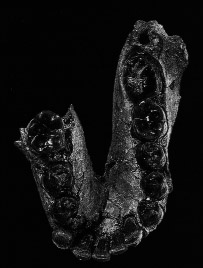
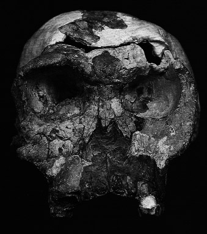
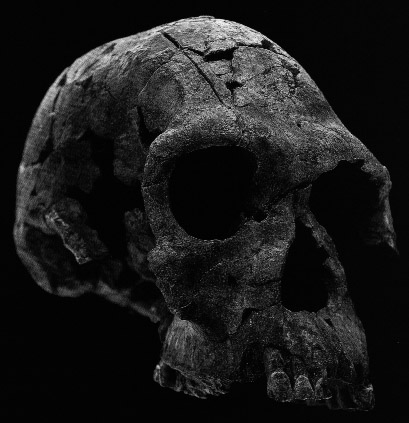
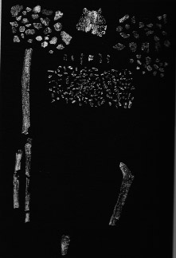
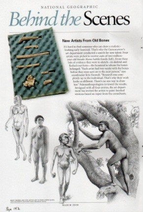
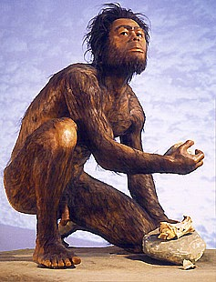
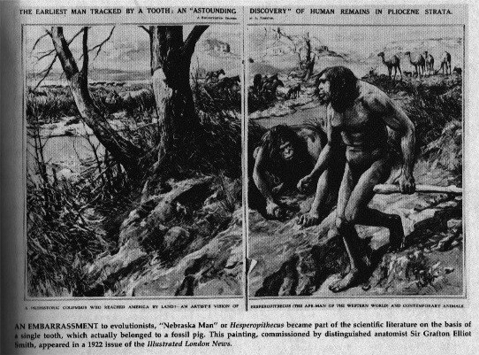
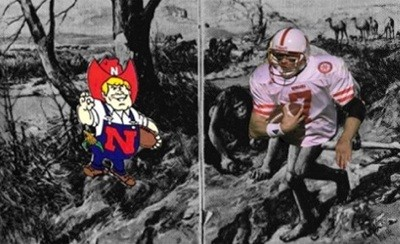

Homo "the Tool Man" Habilis
("I don't think so, Tim.")
This month we are continuing the series of essays on the supposed evidence for "human ancestors".
Let's take a look at Homo habilis, called "handy man" by some because stone tools were found in the same rock layers as the Homo habilis fossils. We begin with a fossil called Olduvai Gorge Hominid 7 (OH7).
OH 7
|

|
OH 7 is said to be a juvenile male partial skeleton, 1.75 million years old.
|
OH 7 serves as the holotype for Homo habilis: the definitive single specimen used to describe the distinguishing attributes of this species, which has traditionally been placed at the root of our genus, Homo.
1
This mandible is one of two dozen bones from a juvenile skeleton found at Olduvai gorge, Tanzania, that comprise the type specimen of this species.
2
|
|
We could not find a photograph of the other 23 bones. We suspect they are just tiny fragments.
This is the "type specimen." All other fossils are compared with this one to see if they have the same distinguishing characteristics. It doesn't seem like there is a whole lot there to go on.
Did you notice how parallel the left and right rows of teeth are? The general rule is that U-shaped jaws with parallel teeth are ape jaws, but V-shaped jaws are human. Why is this jaw considered to be human?
We don't have much to say about this fossil because there isn't much fossil to talk about. Let's move on.
OH 24
|

|
OH 24 is said to be an adult female cranium, 1.8 million years old.
This specimen is supposedly 50,000 years older than OH 7. But so little evolution occurred over that 50,000 year period that it is supposedly the same species.
|
Having enough distinctive fossil evidence is an important first step toward designating a new hominid species. For those scientists who considered it hasty to name the species Homo habilis from more fragmentary cranial fossils such as OH 7, this specimen provided important corroborating evidence for the species validity.
3
When it was found the fractured and collapsed brain case, cemented together with a coating of limestone, gave little hint of the specimen's value. Paleoanthropologist Phillip Tobias, co-author of the paper announcing habilis, remarked, on seeing the fossil, "Only Twiggy has been that flat!" The British model's name stuck as a nickname for OH 24.
4
|
|
|
More than 100 tiny fragments could not be put back into place, and the cranium remains somewhat distorted. The top is still flattened, and the base is depressed around the foramen magnum. Behind the browridges, the vault should rise more vertically than it does. Despite these shortcomings, the specimen can still tell us a lot about this hominid.
5
The cranial capacity for OH 24 falls just under 600 cc, the minimum value for Homo, but the low estimate is probably due to the cranium's distortion.
6
|
When you look at the picture, the skull looks nearly complete. That's because plaster fills in the holes. There are 100 pieces that they could not put back in the skull and make it look like they thought it should look, so they left them out. Even so, it still doesn't look like they think it should. We wonder how they know what it should look like. They certainly can't be using OH 7.
Evolutionists believe that intelligence is associated with brain size. At least, they say that whenever it suits their purpose. Neanderthal man had a brain 30 % larger than ours, but they say he wasn't as smart as we are. Go figure. (Maybe we could figure it out if our brains were 30% bigger.  ) Anyway, evolutionists have arbitrarily decided that creatures with brains smaller than 600 cc couldn't be smart enough to be human. But then they found Homo habilis, and all of a sudden the rule doesn't apply any more. The rule doesn't apply because the skull has been "distorted" from its true shape.
) Anyway, evolutionists have arbitrarily decided that creatures with brains smaller than 600 cc couldn't be smart enough to be human. But then they found Homo habilis, and all of a sudden the rule doesn't apply any more. The rule doesn't apply because the skull has been "distorted" from its true shape.
KMN-ER 1813
|

|
KMN-ER 1813 is said to be an adult cranium, 1.9 million years old.
There is some controversy over whether or not skull 1813 is Homo habilis or not. Donald Johanson says,
|
... we have opted to include KMR-ER 1813 in Homo habilis, following the classification of Bernard Wood. Richard Leaky ... has more recently avoided putting a taxonomic label on 1813 other than to say that it should not be called Homo habilis ...
7
|
Apparently, no other bones were found from this specimen. All they have is a skull. And a very small skull (for an adult human) at that.
|
Its brain volume was about 510 cc (just above the australopithecine average and below the generally accepted cutoff point of 600 cc for Homo) ...
8
|
|
OH 62
|

|
Finally, we have OH 62. OH 62 is said to be a partial adult skeleton, 1.8 million years old. We wonder why they don't tell us what gender it is, because this seems to be the most complete of all the Homo habilis fossils, as you can see from the picture at the left.
|
... a mere 25 meters off the road, was a highly fragmented 1.8 million-year-old partial skeleton. After recognition of the first fragment of the skeleton, a proximal right ulna, a major effort was put into an arduous search for additional skeletal elements. ... Screening of all the loose sediments in the immediate area resulted in the recovery of more than 18,000 bone and tooth fragments over an area of about 40 square meters. Most of these were non-hominid remains, but 302 were identified as belonging to OH 62.
9
|
|
|
Compared with a skeleton like Lucy or the Black Skull, OH 62 was scrappy. The teeth were hopelessly splintered into such tiny fragments that, with few exceptions, it was not possible to reassemble a complete tooth crown. It was equally impossible to reassemble the cranial vault fragments into anything remotely resembling a skull. However, portions of a right arm, including most of a humerus and parts of the ulna and radius, were recovered. Part of the left femur was also recovered, including the femoral neck and some of the shaft. Most important, thirty-two fragments were successfully glued together to form most of the maxilla, or upper jaw.
9
|
So, the upper jaw that you see in the top of the picture is really 32 pieces glued together. We wonder if they were glued together in a way to "remove distortion" or not.
|
The third molar had erupted, and from the heavily worn occlusal surfaces of the teeth it was clear that OH 62 was a relatively old adult. ... OH 62 may be the smallest adult fossil hominid ever found, with an estimated stature of about 1 meter.
10
Partially pieced together from more than 300 fragments, this tiny skeleton permitted an estimate of body proportions which revealed that this hominid had very long arms compared to its legs, like Lucy and African apes.
11
The most startling aspect of OH 62 became evident when body proportions were calculated for the upper and lower limbs. Fairly accurate estimates of total limb length for the humerus and the femur, both incomplete, could be calculated. The humerfemoral index of 95 percent indicated that the humerus was 95 percent the length of the femur: a very long arm. In modern humans this index is roughly 70 percent, while in a quadruped like a chimpanzee it is 100 percent (that is, the humerus and femur are of equal length). Such apelike proportions for Homo habilis were unanticipated.
12
If H. habilis was to be considered an ancestor to H. ergaster/erectus at 1.6 million years old, then not only would body size have to increase rather considerably, but the relationship between upper and lower limbs would also have to change dramatically. All this would have to occur over a mere 200,000 years of time. Not an impossibility, but evolution would have had to have been fairly rapid.
13
The discovery of OH 62 has added to the confusion surrounding the diversity in early Homo.
14
|
Review
Let's review what we know. Homo habilis is supposed to have been about 3 feet tall with a skull about half the size of ours. In other words, he was about the size of a chimp. The type specimen's jaw has parallel rows of molars, like an ape. He is supposed to have had arms and legs of equal length, like an ape. There is no mention of any hand or foot bones that indicate he had hands or feet any different from an ape. All the evidence is consistent with an ape. Yet he is classified as "Homo" (that is, human), and is always drawn as being very human. How do we know the drawing is accurate? We are so glad you asked.
Accuracy of Drawings
|
National Geographic was kind enough to print this wonderful explanation of how they reconstruct human ancestors in the current (March 2000) issue of their magazine.
|
It's hard to find someone who can draw a realistic-looking early hominid. That's why National Geographic's art department conducted a search for new talent. Four artists were picked to receive casts of two-million-year-old female Homo habilis fossils. From these bits of evidence they were to sketch--in fleshed-out form--the hominid to whom these bones belonged.
15
|
Look at the partial jaw and six other bones the four artists had to work from. (They are very clearly bones from a female, aren't they? )
How could anyone make an accurate drawing based on these few bones?
We do have to give those artists credit. It takes a lot of skill to invent a creature that looks human, but at the same time is obviously too stupid to be human.
|

|
We were fascinated, however, to notice how human the hands and feet are. We haven't seen any published pictures of H. habilis hand or foot bones. How does the artist know H. habilis had an opposable thumb?
And who gave Harriet habilis that cute, stylish haircut?
|

|
A drawing often tells us more about the artist's biases and prejudices than they do about how the fossils would have appeared in life. Consider this artist's painting that we found on the Hunterian Museum web page16.
It shows Homo habilis using a crude stone tool.
We've already shown you the fragmentary fossils the artist had to go on. It has to be based almost entirely on imagination.
We have to be a little careful how we present this next observation because this essay will be on the Internet, and we don't want the Family Filter to block access to it.
|
We have already noted that H. habilis grew to only 3 feet tall, and had a very small head, about half the size of a modern man. But clearly the artist believes that not all parts of Homo habilis were smaller than modern man's. He cannot possibly have any fossil evidence for this. Although the part in question gets hard from time to time, it doesn't petrify. Since most artists know ways to avoid showing this much detail (he could have moved the right foot forward just a little bit), we must assume that the artist intentionally drew Homo habilis this way to emphasize his virility. The artists wanted to show what a beastly animal Homo habilis was.
By the way, this picture proves that the Homo habilis rabbis must have been really "handy men." They were able to circumcise this fellow with just those crude stone tools.
To make sure the humor doesn't obscure our point, we better explain the joke. Circumcision, as far as we can tell, began as a religious ritual about 4,000 years ago. Certainly the artist did not believe that Homo habilis practiced Jewish customs nearly 2 million years ago. The artist probably believes that H. habilis didn't even have a grammatical language, much less any religious beliefs. When he painted H. habilis, he was more influenced by a fine specimen of manhood that he might have observed in the locker room before a high school physical education class than any specimen that has ever been dug up out of the ground. The painting simply reflects the fact that men are normally circumcised. So without giving it much thought, he assumed that Homo habilis would have been circumcised, too. Similarly, the rest of the painting is more strongly influenced by his beliefs, assumptions, and prejudices, than by the bones.
Of course, the classic example of a fictional ape-man reconstruction is the painting of Nebraska Man by Sir Grafton Elliot Smith, which appeared in the 1922 issue of the Illustrated London News.17

All he had to go on was a single tooth. That isn't much less than the four National Geographic artist wannabees were given.
When they found the rest of the jaw from which the Nebraska Man tooth came, they discovered it was the jaw of an extinct pig. Sir Grafton's drawing wasn't very accurate, was it?
We all know this is what Nebraska Man really looks like:

Ape-men Are in the Eyes of the Beholder
We invite you to study for yourself the fragmentary fossils of the other "early hominids." When you examine the skulls, note how little of the skull is bone, and how much is plaster. You will quickly see that imagination is the main ingredient in the reconstruction of hominids.
Footnotes:
1
Johanson and Edgar, From Lucy to Language, Simon & Schuster, 1996, page 170
(Ev)
2
ibid. page 170
3
ibid. page 172
4
ibid. page 172
5
ibid. page 172
6
ibid. page 172
7
ibid. page 174
8
ibid. page 174
9
ibid. page 176
10
ibid. page 176
11
ibid. page 176
12
ibid. page 176
13
ibid. page 176
14
ibid. page 176
15
National Geographic March 2000, "Behind the Scenes" page 142
(Ev)
16
www.gla.ac.uk/Museum/guided/Hominid
(Ev)
17
Milner, Encyclopedia of Evolution, Henry Holt & Co. 1990, page 323
(Ev)